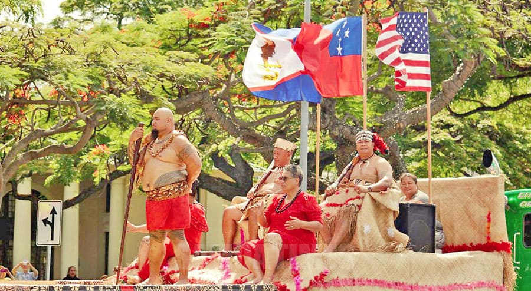

Playthrough Summary
You chose to colonize lands as unincorporated territories of the United States. Regardless of your actions or convictions within this satirical simulation, the reality is that all six have been victims of American imperialism.
American Samoa
About 90% of the inhabitants of American Samoa are indigenous Samoan, all of whom are legally considered U.S. nationals rather than citizens. Holding a second-class status within America's legal system bars an American Samoan from voting but does not keep them from joining the U.S. military. In fact, American Samoa has the highest per-capita military participation rate out of any U.S. territory or state.
Interestingly, American Samoa's exclusion from the rights and protections afforded citizens has allowed the people to govern themselves through a hybrid law system that blends a Western legal framework with communal land ownership and the indigenous matai system depending upon chief leadership. This dynamic has allowed Native culture and practices to thrive in American Samoa like no where else in U.S. lands.
Works Cited:
- Brown Politcal Review article: "American Samoa: Can the Home of the Brave Help More Lands Be Free?" by Ben Youngwood (April 6, 2022)
- ACLU article: "“Nationals” but not “Citizens”: How the U.S. Denies Citizenship to American Samoans" by Gabriela Meléndez Olivera and Adriel I. Cepeda Derieux (August 6, 2021)
Guam
The people of Guam were horribly abused by the Japanese and continued to be abused long after their supposed Liberation Day was impressed upon them by the United States in 1944. The CHamorus were racially segregated, forced to speak English rather than their native language, heavily taxed, and made to sell their land for unfair prices to the U.S. government. Soon after claiming Guam, the U.S. gobbled up the land for military use, eventually occupying "between a third and a half" of the island (The Nation).
Works Cited:
- The Nation article: "Guam: Resisting Empire at the “Tip of the Spear”" by Chris Gelardi (November 2, 2021)
- Pacific Island Times article: "Decolonization for Guam still matters" by Tiara Naputi (January 27, 2022)
- Gallatin Summer Research Blog article: "Meagen Tajalle: Guam and the Myth of Liberation Day" by Meagen Tajalle (June 10, 2020)
- The Guardian article: "'It restores my soul': pandemic offers unexpected boon to Guam indigenous language learners" by Anne Wen (September 15, 2021)
Northern Mariana Islands
...
Works Cited:
Puerto Rico
...
Works Cited:
Virgin Islands
...
Works Cited:
Philippines
Only colonized U.S. that has gained independence...
Works Cited:
Thank you
Thank you for using this application and learning more about decolonial futures.